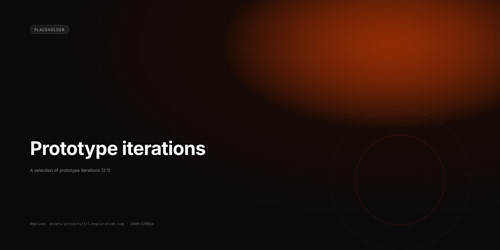

Project overview
A large-scale property platform on web and mobile, where finding the right property quickly is the whole product.
- Led product design for the JLL Real Estate Platform at Jamoons Digital.
- Combined quantitative and qualitative research with 100+ users.
- Redesigned search and discovery, then personalised the journey.
- Measured and iterated continuously using behaviour and engagement data.
Business context
For a property platform, revenue depends on visitors finding relevant listings and engaging with them — especially premium listings. When people can’t find what they need, they leave, and both engagement and revenue suffer.
The challenge
01Low engagement
Users struggled to find relevant properties.
02Incomplete information
About 20% of listings lacked precise location details. Previous portfolio · verify
03Unclear policies
Users were unclear about check-in, flexible check-in and extra documentation.
04Slow responses
Hosts were slow to respond to questions.
Problem statement
People couldn’t find relevant properties quickly or trust the information they found — so they left before engaging.
My role & responsibilities
- Lead Product Designer — owned research, UX and UI for the platform redesign.
- Planned and ran user research and usability testing with 100+ users.
- Created 30+ high-fidelity prototypes, user journeys and motion-enhanced interfaces.
- Led cross-functional collaboration with developers, product managers, marketing and stakeholders.
- Streamlined design handoff to reduce iteration cycles and improve implementation efficiency.
Research & discovery
Interviews and collaborative workshops explored what property seekers and investors prioritise and where they struggle. In-app surveys and feedback added scale.
28%
of chatbot questions were about property details and availability
Previous portfolio · verify90%
wanted clear policies when choosing a property
Previous portfolio · verify46%
contacted hosts to clarify location or check-in after booking
Previous portfolio · verify65%
had to submit additional documents after booking
Previous portfolio · verifyThese four research figures come from your previous portfolio’s JLL page, not your CV. Confirm them (and the sample size) before publishing, or remove them.
User pain points
- Hard to find relevant properties; navigation issues.
- Missing or imprecise location information.
- Unclear policies, check-in and documentation requirements.
- Slow host responses after booking.
Design goals & hypothesis
01Faster discovery
Fewer steps to a relevant listing.
02Trustworthy information
The right details at the right stage.
03Relevance
Personalised recommendations.
04Visibility
Premium listings that perform without feeling intrusive.
Clear location and check-in information during booking will build trust and increase conversion.
Success metrics: conversion rate, user retention and cancellation rate.
User journey
- 1DiscoverSearch & filters
- 2EvaluateListing details & policies
- 3BookAvailability & pricing
- 4PrepareLocation, check-in, documents
- 5ArriveInstructions & host contact
Information architecture
- Property platform
- Search
- Advanced search
- Smart filters
- Recommendations
- Personalised
- Premium listings
- Listing detail
- Overview · availability · pricing
- Location & policies
- Property information guide
- Pre-booking · Post-booking · On arrival
- Search
IA sketch based on documented features — replace with the real sitemap if available.
Wireframes

Design exploration
More than 30 high-fidelity prototypes, user journeys and motion-enhanced interfaces were developed to test ideas across platforms before build.

Final UI designs — screen by screen
Documented in CV Previous portfolio · verify Expected · not yet measured
Advanced search & smart filters

Confirm the specific filter design decisions against your final screens.
What was the problem?
- Users struggled to find relevant properties, which led to low engagement. Research identified usability and navigation issues in how people searched and narrowed results.
Why I designed it this way
- Put the criteria people actually use first, and make filters progressive so the first search is fast and refinement is optional.
- Keep active filters visible and easy to remove, so people never feel trapped by their own choices.
What changed
Search and discovery were redesigned with smart filters and advanced search, simplifying property discovery and navigation. Site speed was also optimised.
User benefit
Relevant properties are reachable in fewer steps, with less guesswork.
Business benefit
Better discovery keeps visitors on the platform — consistent with the documented bounce-rate reduction.
Measurement
| KPI | Signal | Status |
|---|---|---|
| Bounce rate | Visitors leaving without engaging | −15% · documented |
| Search → listing view | Searches that lead to a property view | Add if tracked |
Personalised recommendations & premium listings

What was the problem?
Even with better search, users needed help noticing the properties most relevant to them; high-value listings needed visibility without feeling like ads.
Why I designed it this way
- Use behaviour and preferences to recommend properties, so returning users start closer to what they want.
- Give premium listings clear but honest visibility, and use interactive banners for high-value properties.
What changed
User journeys were personalised through recommendations and premium listing visibility; interactive banners promoted high-value properties.
User benefit
Customers find relevant properties faster.
Business benefit
Premium visibility creates a monetisable placement; personalisation supports engagement and revenue.
Measurement
| KPI | Signal | Status |
|---|---|---|
| Revenue | Platform revenue | +30% · documented |
| Banner clicks | Clicks on interactive banners | +40% · verify |
| Customer engagement | Engagement metric used on the platform | +25% · verify |
Property Information Guide

This screen comes from your previous portfolio’s JLL page. Its language (check-in, hosts, short stays) reads like a hospitality product — confirm it belongs to the JLL platform before publishing.
What was the problem?
- Research showed people needed clearer property information at each stage: details and policies before booking, and location and check-in information after.
Why I designed it this way
- Deliver information when it’s needed instead of all at once: pre-booking, post-booking and on arrival.
- Hypothesis: clear check-in and location information during booking builds trust and raises conversion.
What changed
- Pre-booking: property overview, availability and pricing.
- Post-booking: location details, check-in flexibility and required documents.
- On arrival: check-in instructions, facility access and host contact.
User benefit
Fewer surprises and fewer questions to hosts or support.
Business benefit
Fewer pre-booking enquiries and post-booking clarification requests; success measured through conversion, retention and cancellation rate.
Measurement
| KPI | Signal | Status |
|---|---|---|
| Conversion rate | Success metric defined for the hypothesis | Add result |
| User retention | Success metric | Add result |
| Cancellation rate | Success metric | Add result |
Interaction & prototyping
Motion-enhanced prototypes helped stakeholders and developers understand transitions and states early, and supported a smoother cross-platform experience. A streamlined handoff reduced iteration cycles.

Design decisions
| Decision | Reason | Area |
|---|---|---|
| Progressive, smart filters | Fast first search, optional refinement | Discovery |
| Personalised recommendations | Start returning users closer to their goal | Relevance |
| Staged property information | Answer questions before they become enquiries | Trust |
| Premium visibility via interactive banners | Monetisable placement without dark patterns | Revenue |
Business impact
+30%
Platform revenue
Documented in CV−15%
Bounce rate
Documented in CV100+
Users in research & usability testing
Documented in CV
30+
High-fidelity prototypes
Documented in CV
+25%
Customer engagement
Previous portfolio · verify+40%
Clicks on interactive banners
Previous portfolio · verifyInterviews, surveys and usability tests located navigation and discovery issues.
Advanced search and smart filters made relevant properties easier to reach.
Recommendations and premium listing visibility surfaced the right properties.
Revenue and bounce-rate improvements on the platform.
These are platform-level outcomes over the period of the redesign. They reflect the combined work of design, engineering, product and marketing — the design contribution was the research, discovery and personalisation work described here, delivered through continuous iteration.
User benefits
- Relevant properties in fewer steps.
- Clear information at each stage, fewer surprises.
- A more consistent experience across web and mobile.
Results & learnings
| Metric | Definition | Result |
|---|---|---|
| Revenue | Platform revenue | +30% |
| Bounce rate | Visitors leaving without engaging | −15% |
| Customer engagement | Platform engagement metric | +25% |
| Banner clicks | Interactive banners for high-value properties | +40% |
Your previous portfolio’s bounce-rate chart shows ‘5% → 15%’, which reads like an increase. Make sure any chart you add shows a 15% reduction.
What I learned
- Research with real users turned vague ‘engagement’ problems into specific, fixable discovery issues.
- Small information gaps — a missing location, an unclear policy — cost trust out of proportion to their size.
- A tight research → test → iterate loop is what makes outcomes repeatable; it’s the same method I later applied at Travel Sailo.
Next steps
- Continue testing the property information guide against conversion, retention and cancellation rate.
- Extend personalisation using engagement data.
- Keep improving location data quality for listings.
Your previous JLL page had a ‘Next Steps for Improvement’ section — paste those points here.